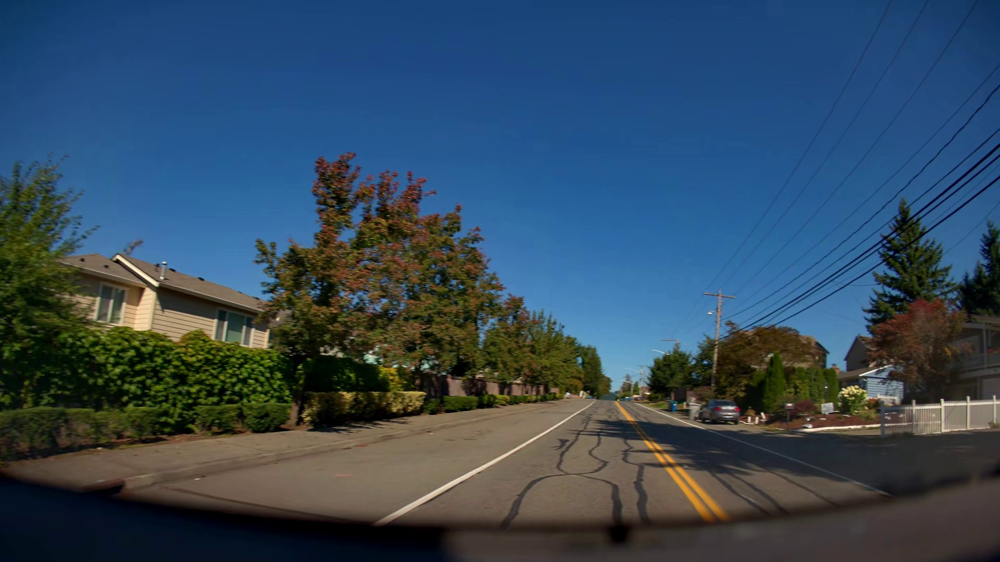

LiDAR · one 360° sweep
Medallion tiers in Apache Iceberg 금 · 은 · 동
This clip
Recorded
Cosmos-Transfer
Episodes per scenario class · nvidia_gold.scenario
Real camera
Twin render
Our twin
Same clip · same policy
NVIDIA's reconstruction
80 closed-loop scenes, in the order the screen would run them
At-fault failures found vs rollout budget